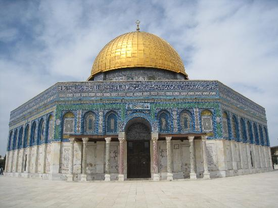

ผลงานชิ้นนี้เป็นส่วนหนึ่งของรายวิชา Multimedia Technology
06016311 ประจำปีการศึกษา 2562
ซึ่งจัดทำขึ้นโดยกลุ่มนักศึกษาจำนวน 3 คน ดังนี้
สามารถเข้าไปรับชมผลงานได้ที่ >>>Click!!<<<
Dome on the rock หรือที่เราเรียกกันว่า "โดมแห่งศิลา" เป็นศาสนสถานของศาสนาอิสลามที่เป็นที่ตั้งของศิลาฤกษ์ (Foundation Stone)และยังเป็นสถานที่ศักดิ์สิทธิ์ที่สุดของศาสนายูดาห์ และเป็นสิ่งก่อสร้างที่เด่นที่สุดบนเนินพระวิหารในกรุงเยรูซาเลม โดมทองสร้างเสร็จในปี ค.ศ. 691 ซึ่งทำให้เป็นสิ่งก่อสร้างของอิสลามที่เก่าที่สุดในโลก
เนื่องจากความสวยงามของสถาปัตยกรรมอิสลามมีความน่าสนใจในการใช้โดมขนาดใหญ่(Rotunda)และใช้กระเบื้องเคลือบในการก่อสร้าง จึงทำให้ทางคณะผู้จัดทำเกิดความสนใจในสถานนี้เป็นอย่างมาก
ลักษณะของสถาปัตยกรรม
กระเบื้องเคลือบ
1.)ทางคณะผู้จัดทำได้ลดรายละเอียดบางส่วน อาจทำให้ไม่เหมือนตัวต้นแบบ 100% แต่ยังคงความใกล้เคียงไว้ให้ได้มากที่สุดเท่าที่คณะผู้จัดทำจะทำได้
1.)ในส่วนการทำ a-sky หรือส่วนพื้นหลังในการหาภาพ panorama ค่อนข้างยากเนื่องจากภาพส่วนใหญ่ต้องทำการจัดซื้อแต่ทางคณะผู้จัดทำไม่สามารถรับภาระทางการเงินได้ จึงจำเป็นให้ภาพพื้นหลังออกมาให้สวยงามเท่าที่จะทำได้
2.)เวลาในการสร้างผลงาน เนื่องจากในช่วงเวลานี้นั้นทางคณะผู้จัดทำมีภารกิจสำคัญ ซึ่งทำให้เวลาในการจัดทำมีจำกัดจึงทำให้ผลงานมีขาดหายตกหล่นไปบ้าง
คณะผู้จัดทำรู้สึกภูมิใจที่ได้สร้างสรรค์ผลงานชิ้นนี้ขึ้นมาและหวังว่าผลงานนี้จะสามารถเป็นประโยชน์แก่ทุกคน